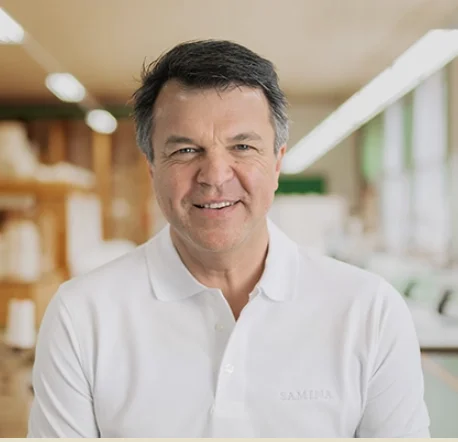

Schlafapnoe: Symptome erkennen, natürlich behandeln – ohne Maske
26 Millionen Deutsche sind betroffen. Über 95 % wissen es nicht. Dieser Leitfaden zeigt Ihnen, wie Sie Schlafapnoe erkennen, welche Risiken sie birgt und warum Schrägschlaf eine wissenschaftlich belegte Alternative zur CPAP-Maske sein kann.
Das Wichtigste auf einen Blick
- Rund 26 Mio. Menschen in Deutschland leiden an Schlafapnoe. Über 95 % sind nicht diagnostiziert (Lancet Respiratory Medicine, 2019).
- Unbehandelt steigt das Herzinfarkt- und Schlaganfall-Risiko um das Vierfache.
- Bis zu 50 % der CPAP-Nutzer brechen die Therapie innerhalb von 10 Jahren ab.
- Ganzkörper-Schrägschlaf (5,5°) kann Apnoe-Episoden um über 60 % reduzieren, ganz ohne Maske.
- Frauen werden bis zu 8-mal seltener diagnostiziert als Männer, obwohl 13 % betroffen sind.
Jede Nacht kämpfen Millionen Menschen mit einem unsichtbaren Feind: Ihr Atem setzt aus. Hunderte Male, manchmal für bis zu zwei Minuten. Sie selbst merken davon nichts. Doch ihr Körper schlägt jedes Mal Alarm. Das Gehirn reißt sie aus dem Tiefschlaf, der Sauerstoff fehlt, das Herz arbeitet auf Hochtouren. Am Morgen fühlen sie sich wie gerädert. Und sie wissen nicht, warum.
Obstruktive Schlafapnoe (OSA) betrifft allein in Deutschland rund 26 Millionen Erwachsene (Lancet Respiratory Medicine, 2019). Das Erschreckende: Über 95 % der Betroffenen sind nicht diagnostiziert (ResMed Healthcare, 2024). Und wer eine Diagnose hat, steht vor einer unbequemen Wahrheit. Denn die Standard-Therapie mit CPAP-Maske bricht jeder zweite Patient vorzeitig ab.
Doch es gibt Alternativen. In diesem Artikel erfahren Sie, wie Sie Schlafapnoe frühzeitig erkennen, was die Forschung über maskenfreie Therapien sagt. Und warum ein simples Prinzip aus der Schwerkraft-Physik Ihren Schlaf verändern könnte.

Mit der SAMINA Schlafmessung erhalten Sie eine medizinisch zertifizierte Auswertung. Bequem im eigenen Bett.
Was ist Schlafapnoe und wie entsteht sie?
Schlafapnoe (obstruktive Schlafapnoe, OSA) ist eine schlafbezogene Atemstörung, bei der die oberen Atemwege während des Schlafs wiederholt kollabieren und den Luftstrom für 10 Sekunden bis zu zwei Minuten unterbrechen. Weltweit sind 936 Millionen Erwachsene betroffen (Benjafield et al., Lancet Respiratory Medicine, 2019). Ursache ist das Erschlaffen der Rachenmuskulatur im Schlaf.
Der Körper reagiert auf jeden Atemaussetzer mit einer Stressreaktion. Der Sauerstoffgehalt im Blut sinkt, Cortisol und Adrenalin werden ausgeschüttet, der Blutdruck steigt. Das Gehirn löst eine Weckreaktion aus, um die Atmung wieder in Gang zu bringen. Diese Arousals dauern oft nur Sekunden. Zu kurz, um sich morgens daran zu erinnern. Aber lang genug, um den erholsamen Tiefschlaf systematisch zu zerstören.
Man unterscheidet zwei Hauptformen:
- Obstruktive Schlafapnoe (OSA): Die häufigste Form. Die Atemwege werden mechanisch blockiert, obwohl das Gehirn korrekte Atemsignale sendet. Betrifft über 90 % aller Betroffenen.
- Zentrale Schlafapnoe: Das Gehirn „vergisst" kurzzeitig, Atemsignale zu senden. Diese Form ist deutlich seltener und oft mit Herzinsuffizienz oder neurologischen Erkrankungen verbunden.
Das wichtigste Maß zur Beurteilung ist der Apnoe-Hypopnoe-Index (AHI): die Anzahl der Atemaussetzer und Atemflussreduktionen pro Stunde Schlaf. Ein gesunder Erwachsener hat weniger als 5 Ereignisse pro Stunde.
| Schweregrad | AHI (Ereignisse/Stunde) | Bedeutung |
|---|---|---|
| Normal | < 5 | Kein behandlungsbedürftiger Befund |
| Leicht | 5 – 14 | Oft asymptomatisch, Beobachtung empfohlen |
| Mittelschwer | 15 – 29 | Therapie empfohlen, erhöhtes Gesundheitsrisiko |
| Schwer | ≥ 30 | Dringender Therapiebedarf, stark erhöhtes Risiko |
Achtung: Unbehandelte schwere OSA ist mit einem bis zu 4-fach erhöhten Herzinfarkt- und Schlaganfall-Risiko verbunden. Bei über 80 % der Patienten mit therapieresistentem Bluthochdruck liegt eine unerkannte OSA vor (Inspire Sleep).
Welche Symptome hat Schlafapnoe?
Die häufigsten Symptome der Schlafapnoe sind lautes, unregelmäßiges Schnarchen mit Atemaussetzern, extreme Tagesmüdigkeit trotz ausreichend Schlaf und morgendliche Kopfschmerzen. 30 % der Männer und 13 % der Frauen in Deutschland sind betroffen (ResMed Healthcare, 2024). Trotzdem vergehen oft mehrere Jahre bis zur Diagnose, weil viele Betroffene die Symptome nicht richtig zuordnen. Oder sie schieben es auf Stress und Alter.
Die typischen Warnsignale lassen sich in nächtliche und tagsüber spürbare Symptome unterteilen.
Schlafapnoe Symptome Frau – Was Frauen wissen müssen
Frauen werden 8-mal seltener diagnostiziert als Männer, obwohl sie fast ebenso häufig betroffen sind (SLEEP Journal, 2025). Ein Grund: Ihre Symptome unterscheiden sich oft vom „klassischen" Bild. Frauen berichten seltener über lautes Schnarchen und häufiger über:
- Chronische Erschöpfung und bleierne Müdigkeit tagsüber
- Morgendliche Kopfschmerzen, die ohne erkennbare Ursache auftreten
- Stimmungsschwankungen, Reizbarkeit und depressive Verstimmungen
- Schlaflosigkeit (Insomnie), also häufiges Aufwachen ohne offensichtlichen Grund
- Konzentrations- und Gedächtnisprobleme („Brain Fog")
- Unruhige Beine oder nächtliches Zähneknirschen
Besonders in und nach den Wechseljahren steigt das Risiko deutlich: Der Rückgang von Progesteron (einem natürlichen Muskeltonusregulator) begünstigt das Erschlaffen der Rachenmuskulatur. Eine aktuelle Studie zeigt zudem ein 28 % höheres Mortalitätsrisiko bei Frauen mit OSA im Vergleich zu Frauen ohne die Erkrankung (SLEEP Journal, 2025).
Wussten Sie? Bei Frauen dauert es bis zu 10 Jahre länger als bei Männern, bis eine Schlafapnoe diagnostiziert wird (Medical Tribune, 2024). Wenn Sie sich in den oben genannten Symptomen wiedererkennen, sprechen Sie Ihren Arzt gezielt auf Schlafapnoe an.
Schlafapnoe Symptome Mann – Das klassische Bild
Männer zeigen häufiger das „klassische" Symptombild. Das Geschlechterverhältnis bei schwerer OSA (AHI ≥ 30) beträgt 7,9:1 zugunsten der Männer (PMC, 2009). Typische Anzeichen:
- Lautes, unregelmäßiges Schnarchen, oft vom Partner bemerkt
- Beobachtete Atemaussetzer im Schlaf
- Plötzliches Aufwachen mit Erstickungsgefühl oder Luftschnappen
- Ausgeprägte Tagesmüdigkeit, Sekundenschlaf
- Verminderte Libido und Erektionsstörungen
- Nächtlicher Harndrang (Nykturie)
- Morgendlicher trockener Mund und Halsschmerzen
- Nächtliches Schwitzen
Schlafapnoe Selbsttest – Erste Anzeichen zuhause erkennen
Ein Schlafapnoe Test beginnt oft mit einem einfachen Fragebogen. Ein Selbsttest ersetzt keine ärztliche Diagnose, hilft Ihnen aber, ein erstes Risikoprofil zu erstellen. Prüfen Sie ehrlich, welche der folgenden Aussagen auf Sie zutreffen:
STOP-BANG Kurzcheck
- Schnarchen: Schnarchen Sie laut? (Hörbar durch geschlossene Türen?)
- Tagesmüdigkeit: Sind Sie tagsüber oft müde, erschöpft oder schlafen ungewollt ein?
- Observed: Hat jemand bei Ihnen Atemaussetzer im Schlaf beobachtet?
- Pressure: Haben Sie Bluthochdruck oder werden dagegen behandelt?
- BMI: Ist Ihr BMI über 35?
- Age: Sind Sie älter als 50 Jahre?
- Neck: Ist Ihr Halsumfang größer als 40 cm?
- Gender: Sind Sie männlich?
Auswertung: Bei 3 oder mehr zutreffenden Punkten besteht ein erhöhtes Risiko. Bei 5 oder mehr Punkten ist das Risiko hoch. In beiden Fällen empfiehlt sich zeitnah eine professionelle Schlafdiagnostik.
Wenn Sie bei sich ein erhöhtes Risiko vermuten, ist eine professionelle Schlafberatung der sinnvollste nächste Schritt.
Medizinisch zertifizierte Schlafdiagnostik bequem im eigenen Bett. Ohne Schlaflabor, ohne Wartezeit.
Wie wird Schlafapnoe diagnostiziert?
Schlafapnoe wird über eine Schlafmessung diagnostiziert, die den Apnoe-Hypopnoe-Index (AHI) bestimmt. Das geht entweder ambulant zuhause (Polygraphie) oder stationär im Schlaflabor (Polysomnographie). Mehr als 20 % der Erwachsenen in Deutschland haben eine behandlungsbedürftige OSA (Universität Duisburg-Essen / TU München, 2026), doch die meisten werden nie gezielt getestet.
Schlafapnoe zuhause testen – Schlafdiagnostik im eigenen Bett
Der erste Schritt ist oft eine ambulante Polygraphie. Sie erhalten vom Arzt oder Schlaflabor ein kleines Messgerät, das Sie über Nacht zuhause tragen. Es misst:
- Atemfluss über Nasen- und Mundsensoren
- Sauerstoffsättigung im Blut (Pulsoximetrie)
- Atembewegungen von Brustkorb und Bauch
- Schnarchgeräusche und Körperlage
- Herzfrequenz
Die Messung findet in Ihrer gewohnten Schlafumgebung statt. Das ist ein Vorteil gegenüber dem Schlaflabor, wo viele Menschen allein durch die ungewohnte Umgebung schlechter schlafen. Bei einem auffälligen Befund folgt in der Regel eine Überweisung zur stationären Polysomnographie.
Schlafapnoe Screening und Schlaflabor
Die Polysomnographie im Schlaflabor gilt als Goldstandard der Schlafdiagnostik. Über eine Nacht werden neben den Atemparametern auch Hirnströme (EEG), Augenbewegungen und Muskelaktivität aufgezeichnet. So lässt sich nicht nur die Anzahl der Atemaussetzer bestimmen, sondern auch deren Auswirkung auf die Schlafarchitektur: wie stark Ihr Tiefschlaf und REM-Schlaf gestört werden.
Was ist eine CPAP-Maske und warum brechen viele die Therapie ab?
Die CPAP-Maske (Continuous Positive Airway Pressure) ist seit den 1980er-Jahren die Standardtherapie bei mittelschwerer bis schwerer OSA. Sie bläst über eine Nasen- oder Gesichtsmaske kontinuierlich Luft in die Atemwege, um sie offen zu halten. Das Problem: 29 bis 83 % der Patienten nutzen das Gerät weniger als 4 Stunden pro Nacht (AWMF S3-Leitlinie, 2023).
Das Prinzip funktioniert: Der Überdruck hält die Atemwege offen und verhindert den Kollaps. Doch die Praxis sieht anders aus. Viele Patienten berichten über:
- Druckstellen und Hautreizungen durch die Maske
- Trockene Schleimhäute in Nase und Rachen
- Nächtliche Panikattacken und Klaustrophobie-Gefühle
- Störende Geräusche, die auch den Partner wach halten
- Blähungsgefühl durch verschluckte Luft (Aerophagie)
- Augenschwellungen durch Leckagen an der Maske
- Zunehmender nächtlicher Harndrang
Eine 10-Jahres-Studie zeigt: Nur 49 % der Patienten nutzten ihre CPAP-Maske nach einem Jahrzehnt noch regelmäßig (Sleep and Breathing, Springer, 2020). In der großangelegten SAVE-Studie lag die durchschnittliche Nutzungsdauer bei lediglich 3,3 Stunden pro Nacht. Bei einer typischen Schlafzeit von 7 bis 8 Stunden (esanum, 2024).
„Die CPAP-Maske behandelt das Symptom, also den Atemwegskollaps, nicht die Ursache. Viele meiner Patienten berichten mir, dass sie trotz CPAP-Therapie weiterhin müde aufwachen. Wenn wir dann nachmessen, stellen wir fest: Der AHI liegt bei vielen Maskenträgern noch über 10 Episoden pro Stunde. Das bedeutet, die Atemwege werden nicht ausreichend stabilisiert."
– Prof. Dr. med. h.c. Günther W. Amann-Jennson, Schlafforscher und Erfinder des SAMINA SchlafsystemsVerstehen Sie uns nicht falsch: CPAP kann bei konsequenter Anwendung Leben retten. Doch die hohen Abbruchraten zeigen, dass es für viele Menschen keine dauerhafte Lösung ist. Und genau hier beginnt die Suche nach Alternativen.

Prof. Amann-Jennson fasst 40 Jahre Schlafforschung zusammen. Kostenlos bei SAMINA bestellen.
Kann man Schlafapnoe ohne Maske behandeln?
Ja, Schlafapnoe lässt sich auch ohne CPAP-Maske behandeln. Eine im Journal of Clinical Sleep Medicine veröffentlichte Studie zeigte, dass Schrägschlaf (7,5 Grad Oberkörpererhöhung) den AHI um 31,8 % senken kann: von 15,7 auf 10,7 Ereignisse pro Stunde (PMC, 2017). Weitere Alternativen sind Unterkieferschienen, Hypoglossusstimulation und Positionstherapie.
Schlafapnoe Geräte ohne Maske – Welche Alternativen gibt es?
Wer nach Geräten ohne Maske bei Atemaussetzern im Schlaf sucht, findet heute mehrere evidenzbasierte Optionen: Unterkiefer-Protrusionsschienen (Zahnschienen, die den Unterkiefer nach vorn verlagern), Hypoglossusstimulation (ein implantierter Zungenschrittmacher), Rückenlageverhinderungsgurte darunter als besonders vielversprechender Ansatz – das Schrägschlaf-System. Im Unterschied zur CPAP-Maske setzen diese Alternativen auf die natürliche Offenhaltung der Atemwege, ohne dass ein Gerät Luft in die Atemwege pressen muss.
Der Durchbruch: Schrägschlaf gegen Schlafapnoe
Den entscheidenden Impuls lieferte ein Experiment, das Prof. Amann-Jennson, Schlafforscher und SAMINA-Erfinder, gemeinsam mit dem Schlafmediziner Prof. Dr. Karl Hecht an der Berliner Charité durchführte. Prof. Hecht (damals 87 Jahre alt) litt selbst unter leichter OSA mit mehr als 10 Episoden pro Stunde.
Das Versuchsdesign war denkbar einfach: 10 Nächte in normaler Flachlage, gefolgt von 10 Nächten in einer Ganzkörper-Schräglage von 5,5 Grad. Also nicht nur den Kopf erhöht, sondern den gesamten Körper gleichmäßig geneigt.
Die Ergebnisse waren bemerkenswert: Die Apnoe-Episoden sanken von durchschnittlich 63,5 (flach) auf 24,6 pro Nacht (schräg). Innerhalb von nur 10 Nächten wurden Normalwerte unterschritten. Ohne Maske, ohne Gerät, ohne Nebenwirkungen (Amann-Jennson, „Einfach gesund schlafen", S. 142).
„Die Schwerkraft ist der unterschätzteste Faktor in der Schlafmedizin. Wenn Sie den gesamten Körper in eine leichte Schräglage bringen, verlagern sich Zunge und Weichgewebe nach vorn. Die Atemwege bleiben offen. Gleichzeitig verbessert sich die Drainage der Nasennebenhöhlen und der Rückfluss von Mageninhalt wird reduziert. Nach unseren bisherigen Beobachtungen spricht die Mehrheit der Betroffenen positiv auf diesen Ansatz an."
– Prof. Dr. med. h.c. Günther W. Amann-Jennson, Schlafforscher und SAMINA-ErfinderBioSleep4™ – Das ganzheitliche 4-Säulen-Konzept
Auf Basis dieser Forschungsergebnisse entwickelte Prof. Amann-Jennson, Schlafforscher und SAMINA-Erfinder, das BioSleep4™ System: ein ganzheitliches Therapiekonzept, das vier wissenschaftlich fundierte Säulen vereint:
1. Gravitas® Schräglage
Ganzkörper-Neigung von 5,5° hält die Atemwege durch Schwerkraft offen. Verbessert zusätzlich Drainage und Reflux-Prävention.
2. Orthopädisches Schlafsystem
Ergonomische Lagerung von Wirbelsäule und Nacken. Verhindert ungünstige Kopfpositionen, die den Atemweg verengen.
3. Bioaktives Bettklima
Natürliche Materialien regulieren Temperatur und Feuchtigkeit. Ein optimales Schlafklima unterstützt ungestörte Schlafphasen.
4. Lokosana® Erdung
CE-zertifiziertes Medizinprodukt. Kann den Stressabbau und die Herzratenvariabilität (HRV) unterstützen. Das sind wichtige Faktoren für die Schlafqualität.
Der Unterschied zu anderen Premiumherstellern: Nach unserem Wissen ist SAMINA der einzige Bettenhersteller, der orthopädischen Liegekomfort mit einem wissenschaftlich belegten, maskenfreien Therapiekonzept gegen nächtliche Atemaussetzer verbindet. Während andere auf Luxus oder Naturmaterialien setzen, adressiert das SAMINA-System die medizinische Ursache: die Instabilität der Atemwege im Schlaf.
BioDay7™ – Warum guter Schlaf am Tag beginnt
Die Erkrankung entsteht nicht nur im Bett. Faktoren wie Übergewicht, Bewegungsmangel, Stress und eine ungünstige Körperhaltung tagsüber beeinflussen die Schwere der Erkrankung. Deshalb ergänzt SAMINA das nächtliche BioSleep4™ System um BioDay7™: ein Tageskonzept mit sieben Bausteinen für aktive Schlafprävention: von Lichtmanagement und Bewegungsimpulsen bis hin zu Atemtraining und Stressreduktion.
Sie möchten wissen, ob Schrägschlaf auch für Sie in Frage kommt? In einer SAMINA Filiale erhalten Sie eine individuelle Schlafberatung und können das System vor Ort testen.

Individuelle Beratung und das BioSleep4™ System vor Ort testen. In 13 Filialen im DACH-Raum.
Welche Messgeräte gibt es für Schlafapnoe?
Schlafapnoe-Messgeräte reichen von einfachen Fingerpulsoximetern über ärztlich verordnete Polygraphie-Geräte bis hin zu professionellen Systemen wie dem WatchPAT. Die jährlichen Kosten pro OSA-Patient betragen in Europa durchschnittlich 3.002 Euro (PMC, 2025). Regelmäßiges Messen lohnt sich, um den Therapieerfolg objektiv zu verfolgen.
Für die Schlafdiagnostik zuhause stehen heute verschiedene Messgeräte zur Verfügung:
- Polygraphie-Geräte: Messen Atemfluss, Sauerstoffsättigung und Körperlage. Werden ärztlich verordnet und von der Krankenkasse übernommen.
- Fingerpulsoximeter mit Aufzeichnung: Einfache Geräte, die den Blutsauerstoff über die Nacht aufzeichnen. Geben erste Hinweise auf wiederkehrende Sauerstoffabfälle.
- Smartwatches und Wearables: Aktuelle Geräte erkennen Schlafphasen, Blutsauerstoff und teilweise Atemstörungen. Als Screening nützlich, für eine Diagnose nicht ausreichend.
- Professionelle Schlafanalyse: SAMINA bietet in den Filialen eine umfassende Schlafanalyse an, inklusive Bewertung der Schlafumgebung und individueller Empfehlungen.
Besonders wertvoll ist die regelmäßige Messung, wenn Sie eine Therapie begonnen haben: ob CPAP, Schrägschlaf oder Gewichtsreduktion. So sehen Sie objektiv, ob und wie stark sich Ihr AHI verbessert.
SAMINA Schlafmessung – wissenschaftliche Diagnostik in Ihrem eigenen Bett
Sie möchten wissen, wie es um Ihren Schlaf wirklich steht? Die SAMINA Schlafmessung macht es möglich: Sie erhalten ein medizinisch zertifiziertes Messgerät nach Hause, tragen es bequem über Nacht. Anschließend bekommen Sie eine detaillierte Auswertung Ihrer Schlafqualität. Kein Schlaflabor, keine Wartezeit, keine fremde Umgebung.
Die Messung liefert Ihnen unter anderem Erkenntnisse über Ihre Atemaussetzer, Sauerstoffsättigung und Schlafphasen. Auf Basis der Ergebnisse erhalten Sie konkrete, personalisierte Empfehlungen. Ein idealer erster Schritt, wenn Sie nächtliche Atemaussetzer vermuten oder Ihre aktuelle Therapie überprüfen möchten.
Erfahren Sie, wie erholsam Ihr Schlaf wirklich ist – mit medizinisch zertifizierter Diagnostik zuhause.
Mehr dazu erfahren Sie im Buch „Einfach gesund schlafen" von Prof. Amann-Jennson. Kostenlos erhältlich bei SAMINA.
Häufige Fragen zu Schlafapnoe
Ist Schlafapnoe heilbar?
Eine vollständige Heilung im klassischen Sinn ist bei obstruktiver Schlafapnoe selten. Allerdings lässt sich die Erkrankung sehr wirksam behandeln. Studien zeigen, dass Schrägschlaf in einer Ganzkörper-Neigung von 5,5 bis 7,5 Grad den AHI um über 30 % senken kann. Gewichtsreduktion, Positionstherapie und ein optimiertes Schlafumfeld können die Symptome bei vielen Betroffenen so weit reduzieren, dass sich die Werte deutlich verbessern.
Kann man Schlafapnoe ohne Maske behandeln?
Ja. Evidenzbasierte Alternativen zur CPAP-Maske sind Schrägschlaf in 5,5° Ganzkörper-Neigung, Unterkieferschienen, Rückenlageverhinderung und Hypoglossusstimulation. Eine Untersuchung an der Charité Berlin zeigte eine Reduktion der Apnoe-Episoden von 63,5 auf 24,6 pro Stunde allein durch Schrägschlaf.
Welche Schlafposition hilft bei Schlafapnoe?
Die Seitenlage gilt als beste Position, da die Atemwege weniger leicht kollabieren als in Rückenlage. Noch wirksamer ist eine leichte Ganzkörper-Schräglage von 5,5 bis 7,5 Grad: Studien belegen eine AHI-Reduktion um bis zu 31,8 %. Wichtig: Nur den Kopf hochzulagern reicht nicht. Der gesamte Körper muss gleichmäßig geneigt sein.
Wie erkenne ich Schlafapnoe selbst?
Achten Sie auf lautes Schnarchen mit Atemaussetzern, extreme Tagesmüdigkeit, morgendliche Kopfschmerzen und trockenen Mund beim Aufwachen. Bitten Sie Ihren Partner, auf Atemstillstände zu achten. Der STOP-BANG-Fragebogen gibt eine erste Risikoeinschätzung. Für eine gesicherte Diagnose empfiehlt sich eine ambulante Schlafmessung.
Was ist der AHI-Wert?
Der Apnoe-Hypopnoe-Index (AHI) misst die Anzahl der Atemaussetzer und Atemflussreduktionen pro Stunde Schlaf. Normal: unter 5 Ereignisse/Stunde. Leicht: 5–14. Mittelschwer: 15–29. Schwer: 30 oder mehr. Er ist das wichtigste Kriterium zur Diagnose und wird im Schlaflabor oder mit ambulanten Messgeräten zuhause ermittelt.
Hilft Schrägschlaf bei Schlafapnoe?
Ja, mehrere Studien bestätigen die Wirksamkeit. Bei 7,5° Oberkörpererhöhung wurde eine AHI-Reduktion von 31,8 % gemessen (PMC, 2017). Eine Untersuchung an der Charité Berlin zeigte bei 5,5° Ganzkörper-Schräglage eine Reduktion von 63,5 auf 24,6 Episoden pro Stunde. Die Schwerkraft hilft, die Atemwege offen zu halten und Magenreflux zu verhindern.
Was kostet eine Schlafapnoe-Diagnose?
Eine ambulante Polygraphie wird bei begründetem Verdacht von der Krankenkasse übernommen. Privat kostet sie 150–300 €. Eine stationäre Polysomnographie liegt bei 500–800 € pro Nacht, wird bei medizinischer Indikation aber ebenfalls von den Kassen getragen. SAMINA bietet in den Filialen eine professionelle Schlafberatung als erste Orientierung an.
Fazit: Schlafapnoe ist behandelbar – auch ohne Maske
Schlafapnoe ist weit verbreitet, gefährlich, und doch bei den meisten Betroffenen unerkannt. Je früher Sie handeln, desto besser lassen sich die gesundheitlichen Folgen vermeiden. Die Forschung zeigt: Neben der klassischen CPAP-Therapie gibt es wirksame, natürliche Alternativen wie den Ganzkörper-Schrägschlaf.
Wenn Sie mehr über das Thema erfahren möchten, empfiehlt sich das Buch „Einfach gesund schlafen" von Prof. Amann-Jennson. Es fasst über 40 Jahre Schlafforschung verständlich zusammen. Es ist bei SAMINA gratis erhältlich.
Medizinisch zertifizierte Schlafdiagnostik bequem im eigenen Bett. Ohne Schlaflabor, ohne Wartezeit.
Lassen Sie sich persönlich beraten und testen Sie das BioSleep4™ System vor Ort.
40 Jahre Schlafforschung verständlich zusammengefasst. Kostenlos bei SAMINA.
Quellen: Benjafield et al., Lancet Respiratory Medicine (2019) · ResMed Healthcare (2024) · AWMF S3-Leitlinie SBAS (2023) · Sleep and Breathing / Springer (2020) · SLEEP Journal / Oxford Academic (2025) · Medical Tribune (2024) · PMC / Journal of Clinical Sleep Medicine (2017) · International Journal of Cardiology (2013) · PMC / Epidemiology and Economic Burden Europe (2025) · Universität Duisburg-Essen / TU München (2026) · Inspire Sleep · esanum (2024)